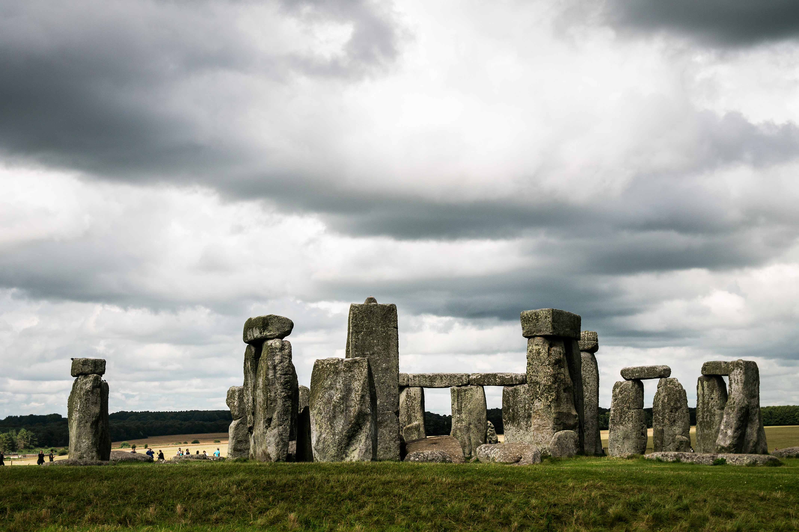
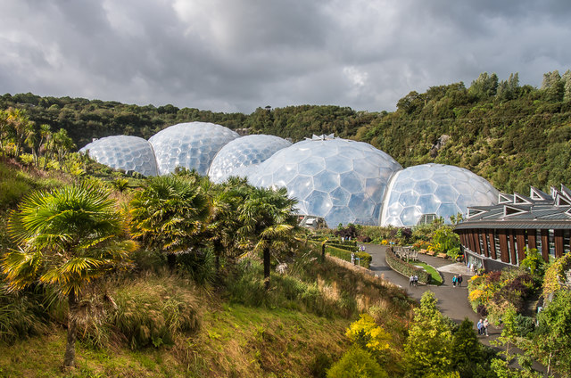

Speaking of the United Kingdom, the first that would pop into everyone's mind is the city of London. To understand the rich history of the United Kingdom, it is essential to visit several must goto historical sites and buildings in the heart of London. Including the Tower of London, which is just by the famous Tower Bridge, Buckingham Palace, London's Royal home since Queen Vistoria's reign, and the Changing of the Guard. Also a must are the Big Ben and the Parliament Buildings as well as the Westminster Abbey. Furthermore, to overlook the city of London, don't forget to stop by the London Eye, one of the highest viewing point in London.
Stonehenge
One of the oldest Word Heritage Sites, Stonehendge, the wonder of the world and the best known prehistoric monument in Europe. Archaeologists believe it was constructed from 3000 BC to 2000 BC. It consists of a ring of standing stones, each around 13 feet high and seven feet wide weighing around 25 tons. Although it is situated around 90 miles west from Central London, tour bus are offered almost daily. With different choices of tours going to Stonehenge from Central London, it is also possible to get a specialist Stonehenge guide or a Stonehenge private walking tour to not only experience the view of Stonehenge form afar, but also the Stonehenge landscape providing more informed insight into the covering features of Stonehenge.

Eden Project

Located in Cornwall, England is the Eden Project. The Eden Project is dominated by two huge enclosures consisting of domes that house thousands of plant species. With each emulating a natural biomes, they demonstrate the importance of plants to people and promote the sustainable use of plant resources. Experience the sights and smells of the rainforests in the Rainforest Biome, the Eden Project houses biomes in a crater the size of 30 football fields. Different activities are also offered, such as rainforest canopy walkway that takes you above the treetops, world-class sculpture and arts, or even zip wire, 360 swing, aerial trekking course etc.